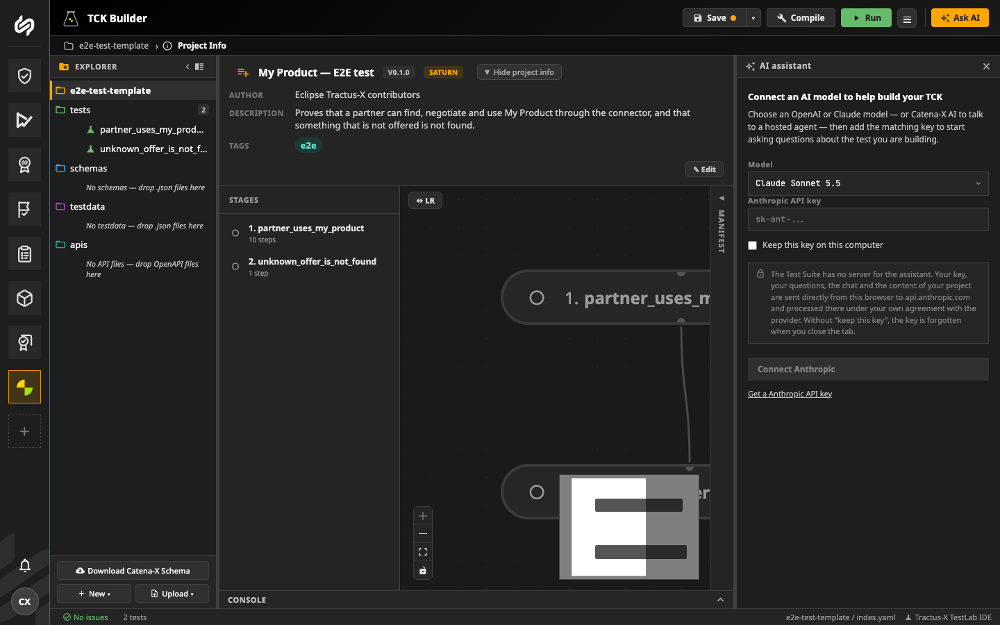

The tutorial · chapter 3, route A · ● ● ● ○ ○ ○ ○ ○
3A · Open the IDE and connect your API key¶
Goal: the assistant in the IDE answers you. Time: 5 minutes
The Test Suite IDE is one way to build a TCK project faster: blocks, a YAML editor and an AI assistant in the browser.
Steps¶
- Open the address in box B of your handout and sign in with the account next to it.
- In the bar on the left, click the Test Suite IDE icon. The page is titled TCK Builder. You see the welcome screen.
- Download the template:
e2e-test-template.zip. - On the welcome screen, click Open File and choose the ZIP you just downloaded.
- At the top right, click Ask AI.
-
Under Model, choose the model you brought:
You brought Choose Then enter An OpenAI key A GPT model Your key, then Connect OpenAI An Anthropic key A Claude model Your key, then Connect Anthropic Catena-X AI access Catena-X AI Your key and agent ID -
Type
Hello. What is in this project?and press Enter.
You should now see¶
The template project on the left, with its two tests, and the assistant panel on the right.

After step 7, the assistant answers with a short description of the two tests.
Note
Your key goes from your browser straight to the provider you chose. The Test Suite has no server for the assistant. Without Keep this key on this computer, the key is forgotten when you close the tab.
Tip
Stuck?
- A "Welcome" dialog covers the page: close it with the × at its top right.
- The key is refused: copy it again without spaces. A ChatGPT or Claude subscription is not an API key.
- No API key, but a subscription to an AI coding assistant: take route C. You build on your laptop with your own tool and open the result here.
- Nobody in the team has a model: join a team that has one, or build by hand from the worked example.
← 3 · Choose your AI · Home · Next: 4 · Build the test with the assistant →
NOTICE¶
This work is licensed under the CC-BY-4.0.
- SPDX-License-Identifier: CC-BY-4.0
- SPDX-FileCopyrightText: 2026 Contributors to the Eclipse Foundation
- SPDX-FileCopyrightText: 2026 Catena-X Automotive Network e.V.
- Source URL: https://github.com/eclipse-tractusx/tutorial-resources